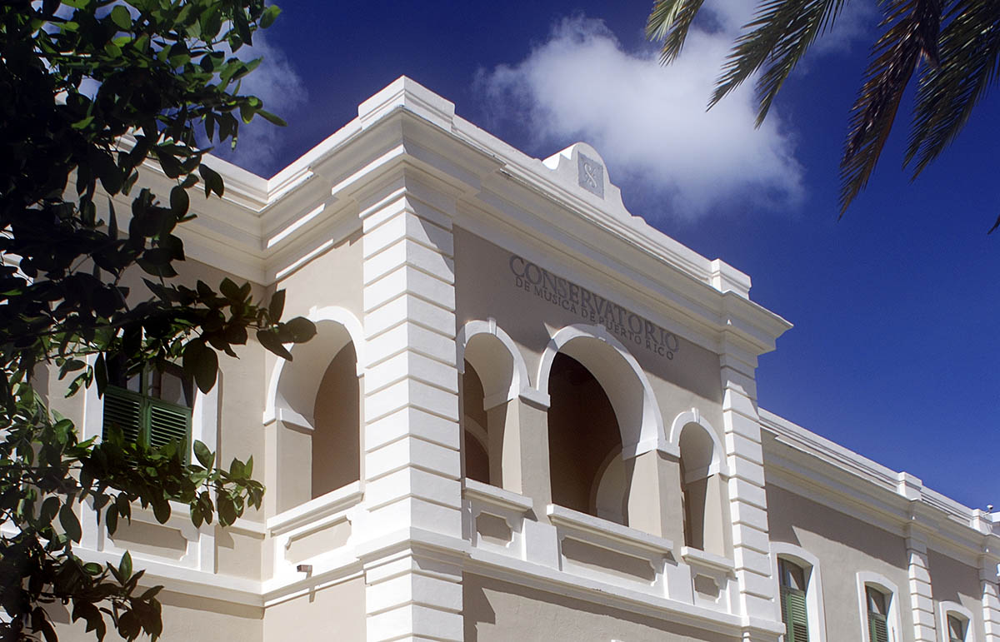

Curso de Canto
Explora el arte del canto y mejora tu técnica vocal con nuestros profesores expertos. Presiona las imágenes para ver una muestra.
En el "Conservatorio de música de Puerto Rico", nuestra pasión por la música nos llevó a fundar este espacio en 1959, donde creemos que cada persona tiene el potencial de convertirse en un gran músico. Ofrecemos una variedad de cursos, desde Canto y Guitarra hasta Piano y Teoría Musical, diseñados para todos los niveles y edades. Nuestro equipo de profesores experimentados se dedica a brindar una educación de alta calidad, ayudando a cada estudiante a descubrir su voz y estilo únicos. Nuestra filosofía se centra en crear un ambiente inclusivo y motivador, donde la práctica y la teoría se combinan para ofrecer una formación integral. Desde el "Conservatorio de música de Puerto Rico", te invitamos a unirte a nuestra comunidad y experimentar el poder transformador de la música en tu vida.
Explora el arte del canto y mejora tu técnica vocal con nuestros profesores expertos. Presiona las imágenes para ver una muestra.
Aprende a tocar la guitarra, ya sea clásica, eléctrica o acústica, con lecciones adaptadas a todos los niveles. Presiona las imágenes para ver una muestra.